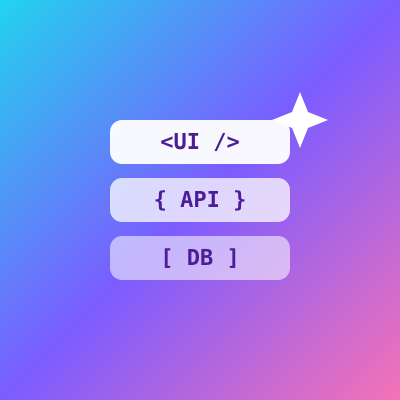
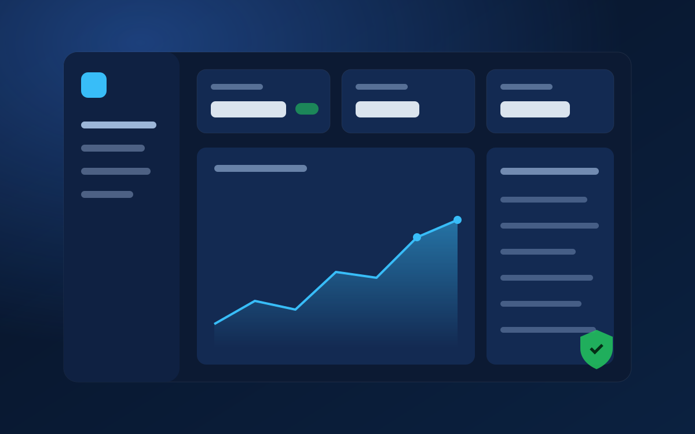

Frontend & Mobile
Fast, accessible interfaces in React, Next.js and Vue, plus cross-platform mobile apps with React Native and Expo.
> Full-Stack Developer|
I'm a Full-Stack & AI Developer with 6+ years building web, mobile and cloud products with React, Next.js, TypeScript, Node.js and Python — and bringing in AI features like LLMs, RAG and AI agents where they add real value.


I build scalable web, mobile and cloud products end to end: clean, accessible React and Next.js front ends, well-designed APIs in Node.js, Python, Django or .NET, and databases tuned for real traffic.
I've architected secure enterprise platforms, modernized commerce experiences and automated delivery with Docker and CI/CD. I also bring hands-on AI experience — LLMs, RAG, AI agents and vector search — so I can ship smart features as part of the product, not as an afterthought.
End-to-end ownership across the product stack.
Fast, accessible interfaces in React, Next.js and Vue, plus cross-platform mobile apps with React Native and Expo.
REST and GraphQL APIs, well-tuned databases, payments and third-party integrations — containerized and shipped on AWS with CI/CD.
LLM-powered search, chat and assistants with RAG, AI agents and vector search — built into the product and measured properly.
The tools I use to take ideas from prototype to production.
Building web platforms and AI features across Australia, France and Germany.
Western Technology · Perth, Australia
WayWeDo.com · Brisbane, Australia
CertifiCall · Occitanie, France
Zalando · Berlin, Germany
Don Honorio Ventura Technological State University · 2018 — 2022
Highlights from production systems I've designed, led and shipped.
I'm open to senior and principal roles, contracts and technical leadership engagements. The best way to reach me is through GitHub.